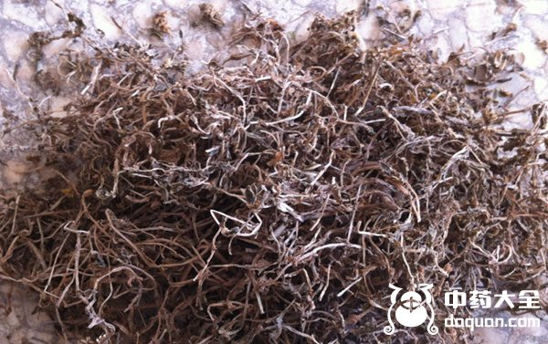
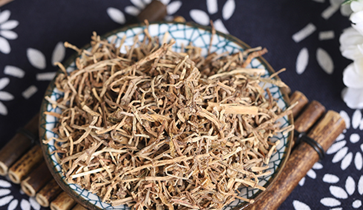
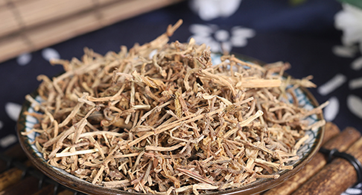
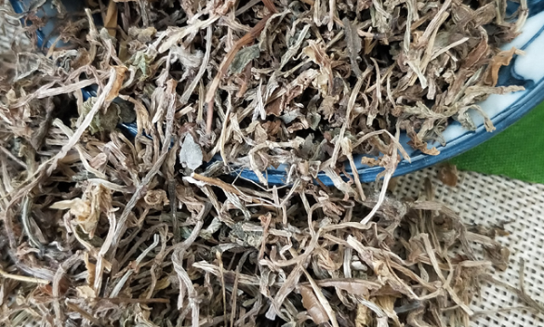
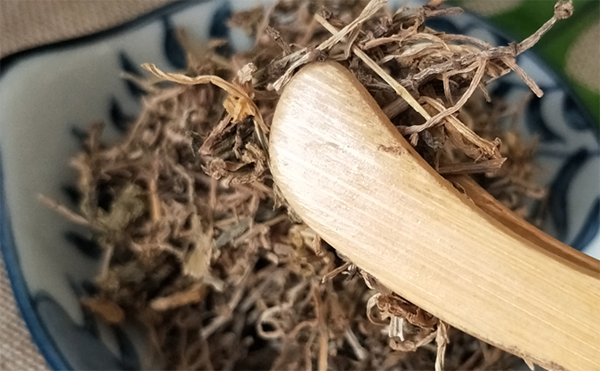

垂盆草是民间使用很广泛的一种中药材，对于腹泻、水肿等症状有很好的效果，针对没有食欲、或者嘴巴苦的症状也有很好的作用，关于垂盆草的功效还有很多，下面中药大全小编和大家一起来了解更多垂盆草的功效与作用。

垂盆草有清热利湿、解毒消肿、凉血止血的功效，也适用于烫伤、蛇虫叮咬、泻痢、肺痈、肠痈、疮疖肿毒、口腔溃疡以及湿疹、带状疱疹等症状，具体如下：
1、烫伤
垂盆草具有非常好的清热解毒的功效，适用于水火烫伤、痈肿创疮疡等症，水火烫伤的人群可以采集仙草洗净，捣烂外敷，每天换2次，数日即愈。
2、治肝炎

垂盆草可以降低血清转氨酶，可以减轻口苦、食欲不好、小便赤黄等湿热等症状，垂盆草含有的四氯化碳性肝损伤有明显保护作用，对于传染性肝炎也有很好的应用。
肝肿瘤患者用以下方剂可以消除症状是肝肿瘤缩小：垂盆草30克、半枝莲30克、生瓦楞30克、石燕30克，漏芦15克、薏苡仁15克，当归9克、丹参9克、红花各9克，八月札6克、白芍6克、陈皮各6克，水煎3次分服，每天1剂。
3、消炎退肿
垂盆草对于炎性肿痛也有很好的功效，它本身属于清热解毒的作用，在痈肿之初，除煎汤内服外，用鲜草洗净捣烂外敷，可消痈退肿。
4、毒蛇咬伤

垂盆草是民间常用的毒舌咬伤的中药，它可以用来解蛇毒，被毒蛇咬后，先清洗伤口，再通过针刺把毒液排除，然后将洗净的鲜草捣烂，外敷伤口1个月，每日换药2次，同时也内服垂盆草汁。
5、治肺部疾病
垂盆草可以使肺部疾病有所好转，使症状减轻，病灶缩小，一般针对肺癌的方剂为：垂盆草30克、白英30克，用水煎服，每天1剂。
6、白血病

垂盆草可以缓解白血病的部分病症，特别是急性各型，主要方剂为：垂盆草30克、猪殃殃30克，羊蹄15克、狗舌草15克、紫草15克、生地15克、黄精15克，当归9克、丹参9克、赤芍9克，川芎甘草6克，用水煎，每天2次。
内服：煎汤，取15-30克，仙品50-100克，或者捣汁。
外用：捣烂，外敷，或者研末，然后外涂，或者煎水湿敷。

垂盆草的不良反应：如果出现恶心、饥饿感、胃部灼痛、肠鸣、腹泻等情况，应该立马停药。
以上为垂盆草的功效与作用的所有内容，相信你已经了解垂盆草了，不仅是很好的中药材，而且可以作为绿化植物。